깨끗한 음질. 첨단 노이즈 캔슬링.
몰입감 넘치는 편안한 청취
액티브 노이즈 캔슬링으로
최대 50시간 오디오 재생
디자인
온전히 몰입되는
청취경험.
블루투스 연결과 원터치 컨트롤로 핸즈프리 통화를 할 수 있습니다. 시리나 구글 어시스턴트를 호출하거나 이동 중 사운드와 풍량 조절이 가능합니다.
주변 소리를 들으려면 헤드폰의 이어컵을 두 번 탭하여 주변음 허용 모드로 전환하세요. 액티브 노이즈 캔슬링 모드를 다시 사용하려면 다시 두 번 탭하면 됩니다.

인체공학적 설계.
뛰어난 착용감.
외부 소음 유입 차단.
500개의
프로토타입
다양한 머리 모양과 크기에 맞춘 인체공학적 설계를 통해 누구나 편안한 착용감으로 다이슨 존 노이즈 캔슬링 헤드폰을 즐길 수 있습니다.


깨끗한 공기를 제공하는
탈부착식 휴대용 바이저
음질
다이슨의
깨끗한 음질.
다이슨은 사람이 소리를 인지하는 방식에 대한 광범위한 음향 분석을 바탕으로 주파수 곡선을 최적화하고 고유의 EQ 설정을 완성해 실감나는 오디오 경험을 제공합니다.

-
첨단 노이즈 캔슬링
8개의 액티브 노이즈 캔슬링 마이크가 주변음을 초당 384,000회 모니터링하여 주위 소음을 제거합니다. 또한 2개의 주변음 허용 모드용과 1개의 전화용 마이크 등 총 3개의 추가 마이크가 있습니다.
-
사실적이고 섬세한 오디오
액티브 노이즈 캔슬링과 결합된 지능형 신호 처리로 왜곡을 줄여 사실적이고 섬세한 오디오를 보장합니다
-
풀 오디오 스펙트럼
맞춤 제작된 40mm, 16옴 네오디뮴 스피커 드라이버는 저음, 중음, 고음을 선명하게 표현할 수 있도록 넓은 주파수 범위를 지공합니다.
장시간 청취 가능한
향상된 배터리
빔포밍 마이크와 노이즈 캔슬링 마이크를 사용해 시끄러운 장소에서도 깨끗한 음질로 통화할 수 있습니다.


MyDyson의
차별화된 기능.
Dyson Zone
제품 선택하기
Dyson zone 구입하기


제품 등록
MyDyson에 가입하고 기기를 등록하면 품질 보증 세부 정보, 사용법 동영상, 사용 가이드 등을 간편하게 확인하고 맞춤형 기기 지원을 제공해 드릴 수 있습니다.
제품 등록하기